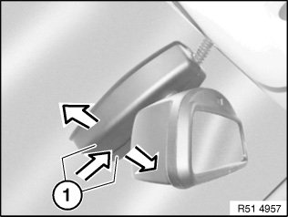
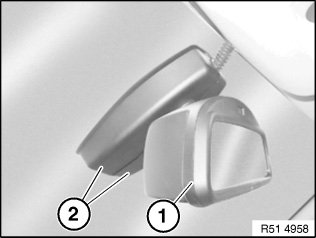
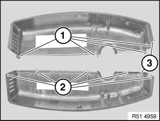

51 16 060 Removing and Installing/Renewing Interior Rear-View Mirror (With Japanese Toll Mirror)
51 16 060 Removing and installing/renewing interior rear-view mirror (with Japanese toll mirror)

IMPORTANT:
- Work may only be carried out at a room/object temperature of 18 ... 28 °C.
- If this can not be guaranteed (cold/hot countries), it is necessary to equalise the temperature of the windscreen, mirror foot and rear-view mirror (e.g. car left to stand indoors or in the shade for at least 30 minutes).

Version with remote control for central locking:
If necessary, disconnect negative lead from battery.
Version with compass:
Check compass function if replacing or after disconnecting interior mirror plug connection or battery.
If necessary, calibrate compass in interior rearview mirror.
E60 Security version:
Rain sensor is not installed, cable connection is tied back in roofliner.
IMPORTANT:
- To avoid breaking windscreen:
- Screw rear-view mirror off mirror mount.
- Mirror must not be pulled or pressed off towards front or rear.

Press on end caps (1) and at same time pull them apart; this releases clip connection of both caps (1).

Turn mirror (1) to right and left and feed out end caps (2).

Installation:
Catches (1) and guides (2) of end caps (3) must not be damaged, replace if necessary.

Disconnect plug connections (1 and 2).
NOTE: Pay attention to cable guide for rain sensor.
E60 Security version:
Rain sensor is not installed, cable connection is tied back in roofliner.
IMPORTANT:
- Do not pull or press rear-view mirror off towards front or rear.
- Because of altered mirror foot, rearview mirror must be twisted off.

Twist mirror foot approx. 45° to right until mirror foot is released from mirror mount.

Installation:
1. Twist mirror foot by approx. 45° and fit to mirror mount.
2. Turn mirror foot until it engages on mirror base.
Only in case of replacement with version with remote control for central locking:
If necessary, initialise all transmitters (ignition keys), refer to Owner's Handbook.